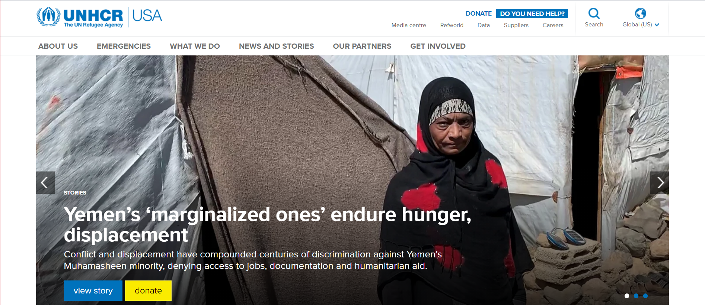

My mission focuses on enhancing the use of donor’s funds to reach full maximization in assisting less privilege kids globally, to connect with them empathically in making them more productive and successful in society as we strive to make this world a better place.

I decided to model my site by the UNHCR website, because of their strong support worldwide in aiding peoples across the globe in time of conflict and needs. the UNHCR is one of the many branches of the UN with hug responsibilities in which they are trying humanly possible to execute.
New Users, Welcome
Welcome and thank you for coming here to site and hopefully join our community in helping kids. We encourage you to navigate our site, see what you do and our priority. It is important for us when an internet user open our website to learn about us and know what we do, and how they can be a part of this terrific gift we give kids each day. We cannot do this on our own, welcome and help us make the world is better place for kids and us all.
What we do
we care for homeless kids, which includes their education, housing, clothing, health care and others important human needs, like security, physical and emotional counseling. we also prepared ourselver for unexpected changes and behavior to gain full readiness in handling it in accordance with the law.
How to be a part
kindly fill out our short support form below and one of our staff will contact you short
Donating Page
please click on donating page ling above and follow the steps. if you need any help, you can call 2222222222 or send us an email on helpkids@quekersein.com.
Thank you message from our kids and community
our community and the kids, we wnat to thank you for spending time here to check out site and what we. the kids espeicaly, say a very big thank to you and hope you aid in making their and our work successful. we hope to see again as we anticipate you with a monthly donation of the stipulated amount above.
- Three Goals I hope to achieved
- Feed and shelter the homeless kids
- protect the homeless kids
- Educate the homeless kids, make them productive and successful
my targeted audience are child service, adult who are seeking to better the lives of unhouse kid, mothers, Father and guidance who are homeless and want to child to get a better future. upon arriving to our site, they will get the exact sense of what and who we help.